首页 > 虚拟结肠镜 / CTC > 结肠展平 > 外表面法
24 JUN
虚拟结肠展平（外表面法）深读：为什么"矫正畸变的尺子"要换成光滑的结肠外表面？ Paper2Html 2026-06-24 Computer Methods and Programs in Biomedicine 117(3) 2014: 473–481 来源：期刊 PDF（机构访问下载）
Virtual Colonoscopy / CTC Colonoscopy Colon Flattening SJTU · Jun Zhao Lab MathJax checked
导读。 虚拟结肠展平（Virtual colon Flattening, VF）要把一根弯曲的 3D 结肠内壁"摊"成一张 2D 图，让放射科医生一眼扫完整段结肠找息肉。可是把曲面摊平必然带来形变畸变，息肉会被拉长或压扁。传统做法用结肠内表面 自己做矫正基准——但内表面布满 haustral folds（结肠袋皱襞），是一把"毛糙的尺子"，矫正越矫越乱。这篇论文的回答只有一句话：把矫正基准换成结肠外表面 （tissue–serosa 边界，结肠壁的外缘）。外表面光滑、没有皱襞、能忠实表达结肠的整体拓扑，于是"矫正基准"和"待展平的目标"第一次成了两个独立物体。围绕这一步，作者补了两个算法：用"测地距离图里最长路径与最短路径之差"检测并切开远端肠壁的粘连（fused areas） ，得到单连通外表面（OSE）；再用互补测地距离图（CGDM）的"velocity"自动分出弯曲段与直段 分别展平（DCA）。60 例 CT、77 颗标注息肉、三位医生独立阅片：正确检出率 79.6% vs 三种内表面方法的 67.1% / 71.9% / 72.7%，每例假阳性 0.16 vs 0.32 / 0.21 / 0.26。
一句话贡献 用光滑的结肠外表面 替代毛糙的内表面 做形变矫正的基准，把"基准"与"目标"解耦，从根上压低展平畸变。
关键机制 OSE：以"测地距离图中球邻域内 $\max g-\min g$"检测肠壁粘连并切开，得单连通外表面；DCA：以互补测地距离图等距面的传播 velocity 找弯曲段，分段沿外表面轮廓等弧长重采样。
核心证据 检出率 79.6%（vs 67.1/71.9/72.7%，ANOVA 对 RCT P=0.0022）；FP/例 0.16（vs 0.32/0.21/0.26，对 RCT P=0.0005）；尺寸/形状畸变比 1.18/1.36 均最接近 1。
复现门槛 60 例公开 NCIA 数据；阈值 $T_r{=}6.0$、$T_d{=}5\%$、$T_v{=}5.0$、$T_n{=}20$ 全部经验设定；矫正用时约 5 min（Intel 2.7 GHz / 8 GB）；代码未开源。
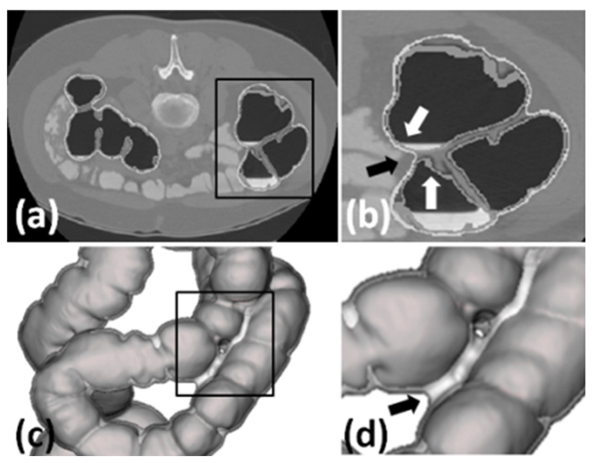
图 1 · 全文的概念锚点。 （a）白线是结肠外表面 、灰线是结肠内表面 ；（b）黑框放大，黑/白箭头分别指内、外表面；（c）3D 结肠壁是包在灰色内表面外的一层白壳；（d）黑箭头指出远端肠段相互"粘连（fused）"的位置——正是 OSE 必须切开的地方。读这张图就抓住了论文的全部赌注：内表面（息肉所在、毛糙）是目标 ，外表面（光滑）是尺子 ，二者分离。1. 核心问题：展平一根弯管，用什么当"矫正的尺子"？
结直肠癌在发达国家是癌症致死的第二大病因，而息肉演变成癌通常要数年——早发现、早切除是性价比最高的干预。CT 虚拟结肠镜（CT colonography）用 CT 重建出结肠内壁，让医生像开飞机一样沿中心线"飞越（fly-through）"检查。问题是 fly-through 单窗口视野有限、耗时，皱襞背面的息肉容易漏看。虚拟展平 是它的互补视角：把整段 3D 内壁摊成一张 2D 图，一屏看全，漏检区更少。
但"摊平"是有代价的：你无法把一根弯曲、带褶的管子摊成平面而不拉伸——这就是形变畸变 。息肉一旦被拉长压扁，尺寸测量和形态识别都会失准。所以每一种展平方法的成败，都落在同一个问题上：你拿什么几何对象当"矫正畸变的基准"？
历史上三大流派——ray casting（射线投射）、conformal mapping（共形映射）、skeleton straightening（骨架拉直）——尽管技术不同，却共用一个隐含选择：拿结肠内表面自己当矫正基准 。论文指出这正是病根：内表面布满 haustral folds，是一个小尺度高曲率、坑坑洼洼的曲面。用一把毛糙的尺子去量，量出来的矫正自然也毛糙。
问：内表面"毛糙"具体怎么把三大流派各自带沟里？
引导：把"毛糙"翻译成各方法的采样语言——射线密度对不上面积、角度守恒不守面积、皮肤蒙在骨架上被褶皱带偏。
答：① Ray casting 让采样射线大致垂直中心线打到内壁，褶皱处面积与射线密度对不上——褶内挤一堆射线 → 过采样、被放大 ；鼓包处射线摊得稀 → 欠采样、被缩小 。② Conformal mapping 保角但不保面积，内表面局部曲率剧烈起伏会逼出很大的面积缩放，于是同样出现局部缩放/夸张。③ Skeleton straightening 把内表面当蒙在中心线骨架上的皮，褶皱直接把皮的形变带歪。三者的共同失败点是一句话：基准本身是毛糙的 。
Takeaway： 畸变不是某个算法的 bug，而是"用内表面当基准"这个选择的系统性后果。要治本，得换基准。
2. 整体解读与贡献：换基准这件事，新意到底在哪？
作者明确提出的贡献。 （1）提出一种基于结肠外表面 的 VF 方法，用外表面（tissue–serosa 边界）而非内表面做形变矫正基准。（2）配套两个新算法：OSE （colonic Outer Surface Extraction，结肠外表面提取）负责从带粘连的肠壁里抽出一个单连通 外表面；DCA （Distortion Correction Algorithm，畸变矫正算法）负责用这层外表面把内表面的展平畸变压下去。（3）在 60 例 CT、77 颗标注息肉上做了定量（尺寸/形状畸变比）与定性（三位医生阅片）双重对照，对手是 ray casting / conformal mapping / skeleton straightening 三种内表面方法。
读者能进一步推断的是 ——这篇文章真正的"机制创新"不在某条公式，而在一次对象解耦 ：传统方法里"矫正基准"与"待矫正目标"是同一个内表面，基准的任何毛刺都会原样污染目标；换成外表面后，二者第一次分成两个独立物体，于是基准可以光滑、目标可以毛糙、互不传染。OSE 与 DCA 都是为"让这把外表面尺子可用"而生的工程支撑：OSE 保证尺子单连通（不打结），DCA 保证用尺子的方式正确（分段、等弧长）。把这三件事串起来看，它是一个"换参照系"的方法论，而不是三个孤立 trick。
表 A。 与三种既有展平流派的差异——区别只在"矫正基准"这一栏。方法 核心图形学技术 矫正基准 对皱襞的敏感性 本文对照角色
Ray casting（Wang et al. 1998） 射线投射 / 电场线采样 结肠内表面 高：过/欠采样 RCT 基线 Conformal mapping（Hong et al. 2006） 保角映射（harmonic 1-form） 结肠内表面 高：保角不保面积 CMT 基线 Skeleton straightening（Sudarsky et al. 2008） 骨架蒙皮形变 结肠内表面 高：皮被褶带歪 AST 基线 本文（外表面法） 电场线采样 + 外表面等弧长重采样 结肠外表面 低：外壳无皱襞 提出方法
一个关键观察
三个基线方法之所以同时能当"对照"，又能当"消融"：它们与本文方法的差别恰恰只有"内表面 vs 外表面"这一处 （采样工具本文也沿用 Wang 的电场线采样）。所以"换基准"这一变量，被三组对照天然地隔离了出来——这点在第 8 节会再用到。
3. 数据与任务：60 例 CT、77 颗息肉，怎么算"检出"？
数据全部来自公开的 National Cancer Image Archive（NCIA），60 例 CT 扫描，体素规模 $512\times512\times366$ 到 $512\times512\times505$，层厚 1.25 mm，像素间距 0.5–0.8 mm。77 颗标注息肉里，57 颗为 6–9 mm、20 颗 ≥10 mm；形态上 16 颗有蒂（pedunculated）、54 颗无蒂（sessile）、7 颗扁平（flat）。任务不是"训练一个模型"，而是构造一个可视化管线 + 让人来读 ：方法的输入是 CT 体数据，输出是一张展平的 2D 内表面图；评测的是"医生在这张图上能否把息肉找全、又不误报"。
表 B。 任务与数据在方法中的作用。项目 论文披露 输入 → 输出 作用 缺失信息
CT 数据 NCIA 60 例，层厚 1.25 mm，像素间距 0.5–0.8 mm CT 体数据 → 结肠内/外表面、中心线 方法的输入与评测载体 具体病例 ID、采集协议未说明 息肉标注 77 颗（57 颗 6–9 mm，20 颗 ≥10 mm） 3D 标注坐标 → 2D 匹配真值 检出率 / 假阳性的金标准 标注者资质未说明 阅片训练集 另设 5 例供 3 位医生训练 5 例四方法结果 → 阅片习惯校准 避免"看不惯 split"带来的偏差 训练充分性未量化 匹配判据 2D 距离阈值 $E=20$ 医生点选坐标 ↔ 标注坐标 判定真阳性 单位（像素/体素）未明示
评测口径用两条公式定死，避免"看图说话"：
$$\text{Sensitivity}=\frac{\text{检出数}}{\text{标注数}}\times 100,\qquad \text{FP per scan}=\frac{\text{假阳性数}}{\text{扫描例数}}$$
式 8 与式 9：灵敏度（正确检出率）与每例假阳性。
4. Pipeline：七步里，哪两步是新造的？
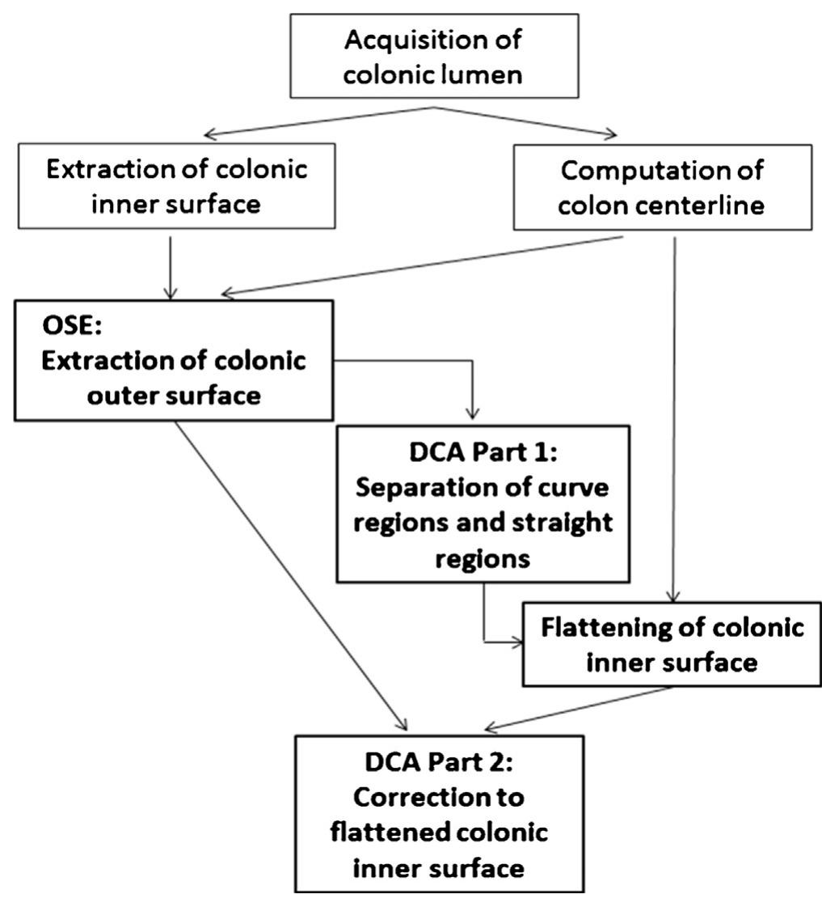
图 2 · 方法总览（论文 Fig. 2）。 七个步骤里，加粗的两个模块是本文新造：OSE（结肠外表面提取） 与 DCA （含 Part 1 弯/直段分离、Part 2 对展平内表面的矫正）。这是一条数据流 ：CT → 肠腔 → 内表面/中心线 →（OSE）外表面 →（DCA-1）分段 → 内表面展平 →（DCA-2）矫正。没有训练流，因为全程是确定性几何算法，不含可学习参数。前三步（取肠腔、取内表面、算中心线）作者直接复用既有方法，所以正文只展开后四步。
输入 / 取肠腔。 从 CT 分割出充气/造影的结肠肠腔（lumen）。作者沿用 Franaszek 等的混合分割。取内表面 + 算中心线。 内表面 = lumen–mucosa 边界（息肉长在这里）；中心线用作者前作（Lu et al. 2012）提取，并特别强调：中心线是基于外 表面算的 ，因为外表面更光滑、中心线更平滑（这条线索直接来自同组的 eversion 论文 Zhang et al. 2010）。OSE：取外表面（新）。 从肠壁里抽出单连通的外表面，关键是切开远端肠段的粘连。详见第 5 节。DCA Part 1：分弯/直段（新）。 用 CGDM 的 velocity 找出弯曲段，分段处理，避免弯道处内外侧采样失衡、以及相邻直段相互干扰。内表面展平。 用 Wang 的电场线采样把 3D 内表面映到 2D（采样工具沿用，不是创新点）。DCA Part 2：矫正（新）。 沿光滑外表面轮廓等弧长放置矫正采样点，重采样内表面，压低径向畸变。
问：如果去掉 DCA-1 的"弯/直段分离"，直接整段展平，会怎样？
答：弯道是畸变的两个来源同时爆发的地方——其一，弯道内侧（凹侧）与外侧（凸侧）采样不平衡；其二，弯道把两段本来分开的直段挤得很近，采样面之间互相干扰。整段展平时这些误差沿中心线累积，沿纵向（longitude）把采样面挤成图 6（a）那样不规则的分布。分段后每段独立，采样面互不影响（图 6（b）（c）），纵向畸变显著下降。代价是会在段界产生"split"（断裂），论文用"重叠区"来表示，第 9 节再谈。
Takeaway： OSE 解决"尺子能不能用"（单连通），DCA-1 解决"在哪用、怎么分段用"，DCA-2 解决"具体怎么量"。三步缺一，外表面这把尺子都摆不正。
5. 方法核心：把"拓扑问题"压成"局部标量测试"
本节按 kexue 的姿态来重推：先讲每一步为什么需要 ，每个近似/阈值显式标出 ，关键机制从两个独立角度交叉验证 。两个被推导的核心是：OSE 怎么检测粘连 、DCA 怎么检测弯道 ——它们恰好用了同一个底层工具（测地距离场），却解两个不同的几何问题。
5.1 OSE：用"球邻域内测地值的极差"检测肠壁粘连
动机。 要用外表面，先得把它干净地抽出来。麻烦在于：当你从肠腔往外扩到浆膜层时，物理上贴在一起的远端肠段（比如乙状结肠相邻的两圈）外壁会"粘连（fused）"成一坨。粘连后的外表面不再是一根简单的管子，展平一个"打了结的团"毫无意义。所以 OSE 必须检测并去除粘连 ，恢复单连通。
先把三个体素集合定死（图 1（c）的几何）：$O$ = 外表面以内的所有体素，$I$ = 肠腔以内的所有体素，$S$ = 肠壁体素。肠壁是肠腔与浆膜之间的壳，于是
$$S=O-(O\cap I)$$
式 1：肠壁 = 外表面内部减去（外表面内部与肠腔的交集）。
再在肠腔上建一张测地距离图 $g(\cdot)$，以直肠底（rectum）为种子，$g(x)$ 是从 $x$ 沿肠腔到种子的最短路径长度，用 3–4–5 整数距离度量 计算（体素图上面/棱/角邻居分别记 3/4/5，是欧氏路径长在格点图上的整数近似）。
把这个直觉写成算子。先定义球滤波器邻域（以肠壁体素 $p$ 为心、半径 $T_r$、只取落在肠腔里的体素）：
$$N=\{\,q:\ \lVert q-p\rVert
式 2：球滤波器邻域。$T_r=6.0$，对应可覆盖厚度 $\le 6\times0.5\times2=6$ mm 的肠壁（最小像素间距 0.5 mm）。 再取这个邻域里测地值的极差 作为粘连分数：
$$\mathrm{dif}(p)=\max_{q\in N} g(q)-\min_{q\in N} g(q),\qquad p\in S$$
式 3：球邻域内测地值的最大减最小。正常壁极差小，粘连壁极差大。
超阈值的体素就是粘连，剔除后更新外表面内部：
$$F=\{\,p:\ \mathrm{dif}(p)>T_d,\ p\in S\,\},\qquad \tilde{O}=O-F$$
式 4 与式 5：$T_d$ 取测地图最大值的 5%，使得最大的皱襞也不会触发 $T_d$；$\tilde{O}$ 是去粘连后的外表面内部。
最后对 $\tilde{O}$ 做一次形态学开运算筛掉憩室（diverticula），再提取 $\tilde{O}$ 的外表面，得到光滑、单连通的结肠外表面（图 4）。
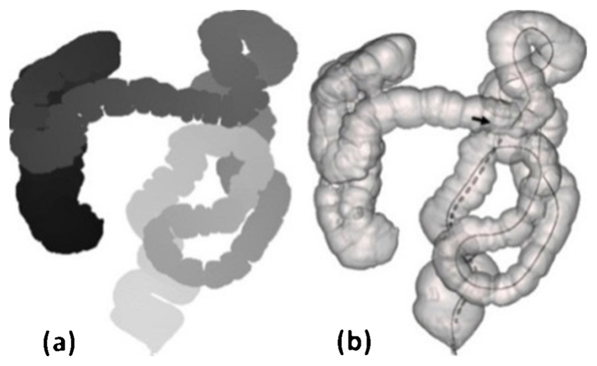
图 3 · 粘连的几何指纹。 （a）肠腔上的测地距离图，以直肠底为种子，黑=高值、白=低值；（b）带粘连的 3D 肠壁，黑箭头指粘连处，实线/虚线是从粘连区到种子的两条路径——实线远长于虚线，正是式 3 极差大的来源。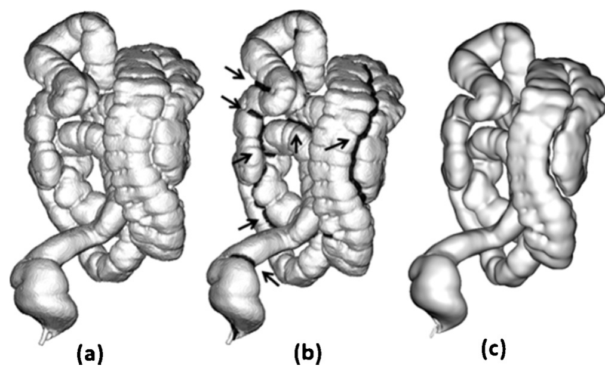
图 4 · OSE 三步（论文 Fig. 4）。 （a）提取的结肠壁；（b）检测到的粘连区（黑色、黑箭头）；（c）去掉粘连后平滑的结肠外表面。从（a）到（c）就是式 1→5 的可视化：极差测试切开打结处，开运算抹掉憩室。
问：用"极差 > 5% 最大测地值"来区分"粘连"和"皱襞"，凭什么？这条阈值最可能在哪里翻车？
引导：皱襞是局部 结构，测地跨度小；粘连是全局 相遇，测地跨度大。阈值押的是这两类的尺度分得开。
答：皱襞只让球邻域内的管腔多绕一点点，$g$ 的极差很小；粘连让球同时夹住相距整段管腔的两处，$g$ 极差巨大——两者尺度差一两个数量级，所以一条 5% 的横线能切开。翻车点也正在尺度假设上：① 若两段相邻 肠段发生粘连（测地间隔本就不大），极差可能不过线 → 漏检；② 若某条皱襞异常长，极差可能过线 → 误判（开运算和后续单连通约束能兜一部分）。$T_r=6.0$（≤6 mm 壁）、$T_d=5\%$ 都是经验值，是这一步的复现门槛。
Takeaway： OSE 的本事不是"算得多准"，而是把"检测自相交"这种拓扑难题，翻译成在测地场上做一次球内极差阈值——简单、可并行、对单连通管几乎总成立。
5.2 DCA：用等距面的"velocity"自动找弯道
动机。 有了光滑尺子，还得知道在哪分段 。整段展平会在弯道爆畸变（5.1 已述），所以要自动定位弯曲段。作者没有去显式算曲率，而是从一个双端种子的测地场里"读"出弯道。
先建互补测地距离图（CGDM） ：分别以直肠、盲肠为两个种子，$g_1$、$g_2$ 是到第一、第二种子的测地距离，
$$cg(p)=g_1(p)-g_2(p)$$
式 6：互补测地距离。再用间隔 $R=10$ 归一化得 scalar CGDM；其等值面（"等距面"）近似垂直中心线、从一端扫向另一端。
scalar CGDM 的等距面像一道沿管腔传播的波前。定义它的传播速度 velocity：
$$v=\frac{\displaystyle\sum_{i=0}^{t}\nabla cg(p_i)}{t}$$
式 7：等距面上 $cg$ 梯度的平均，$t$ 是该等距面的体积。$v$ 高 = 波前推进快、等距面密；$v$ 低 = 推进慢、等距面稀。
这句话可以推成精确式子。$g_1,g_2$ 各自满足程函方程，等距面法向就是 $\nabla cg$：
$$cg=g_1-g_2,\qquad \nabla cg=\nabla g_1-\nabla g_2,\qquad \lVert\nabla g_1\rVert=\lVert\nabla g_2\rVert=1.$$
式 7a：双端测地场之差的梯度。
$$\lVert\nabla cg\rVert=\sqrt{\lVert\nabla g_1\rVert^2+\lVert\nabla g_2\rVert^2-2\,\nabla g_1\!\cdot\!\nabla g_2}=\sqrt{2-2\cos\varphi}=2\Big|\sin\tfrac{\varphi}{2}\Big|.$$
式 7b：由余弦定理，velocity 的模只由 $\nabla g_1$（背离直肠种子）与 $\nabla g_2$（背离盲肠种子）的夹角 $\varphi$ 决定。
据此四步定弯/直段：① 取 velocity 曲线的局部极小值；② 去掉值大于 $T_v=5.0$ 的离群极小（$R=10$ 使 velocity 落在 0–10，$T_v$ 取一半量程：真弯道会塌到半程以下）；③ 极小数若超 $T_n$ 则按升序截断到 $T_n=20$（=4 个解剖弯曲 hepatic/splenic flexure、sigmoid junction、rectosigmoid 的 5 倍，防过分割）；④ 极小标为弯曲段，其余为直段。
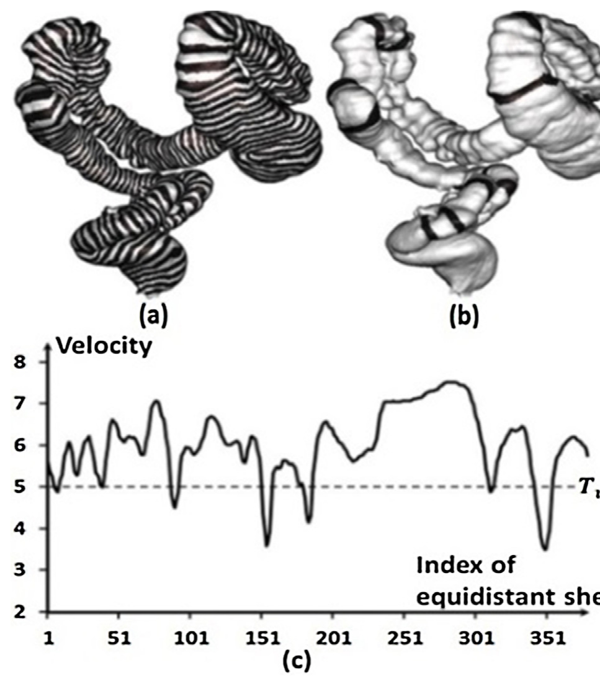
图 7 · 从波前到弯道（论文 Fig. 7）。 （a）scalar CGDM 的等距面以条纹画在肠壁上，弯道处条纹明显更疏；（b）黑色条带标出弯/直段边界；（c）velocity 曲线，去掉大于 $T_v$ 的离群极小后，剩下的谷底即弯曲段。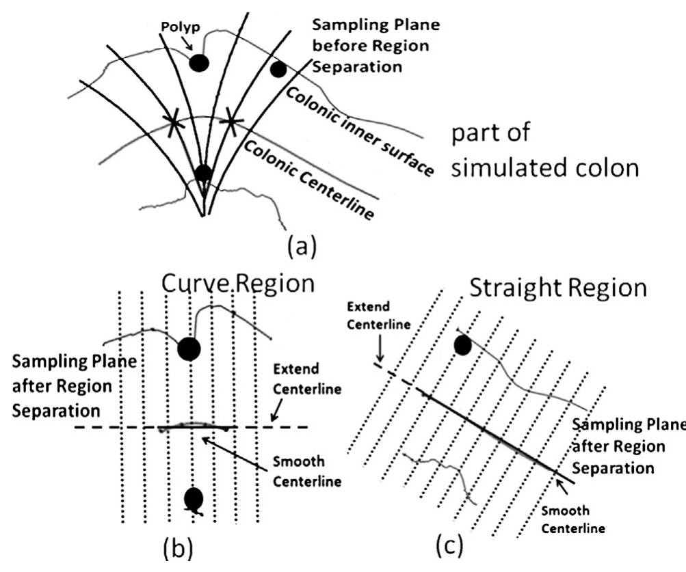
图 6 · 分段为什么有用（论文 Fig. 6）。 （a）分段前采样面沿中心线的纵向分布，叉号是发生分离的位置，弯道处明显紊乱；（b）（c）分段后两段各自独立，采样面规整，纵向畸变下降。
5.3 DCA Part 2：沿外表面轮廓"等弧长"重采样
分好段、选定光滑尺子后，矫正径向畸变只剩四步（图 8）：① 用电场线采样得到原始采样端点（外表面与原始采样射线的交点）；② 提取外表面的轮廓（profile）；③ 沿轮廓等弧长 放置矫正采样端点，间距 $D=1$（每个体素都不漏）；④ 过矫正端点重建矫正射线，重采样内表面。
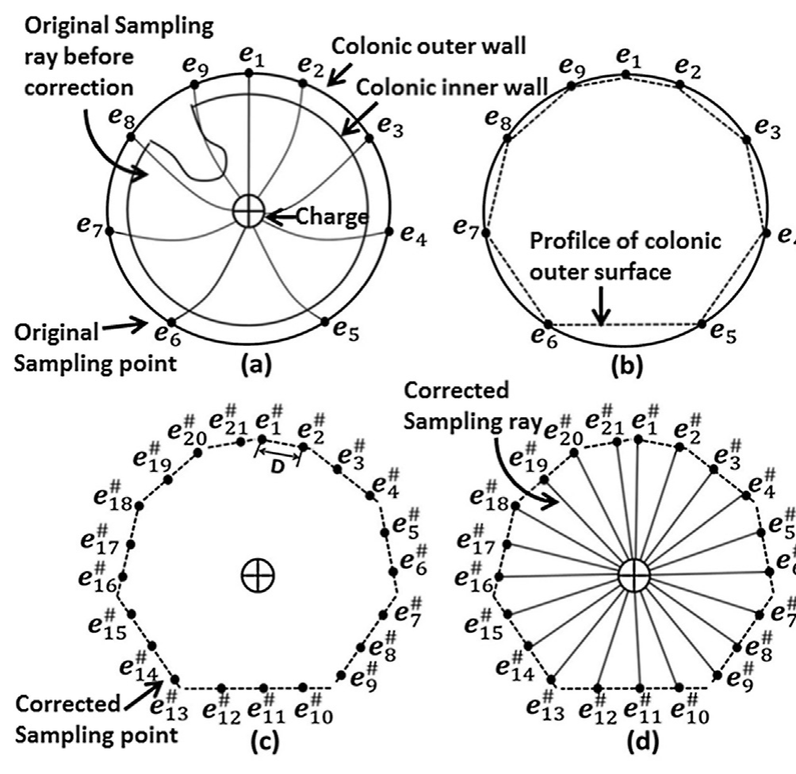
图 8 · 矫正采样的生成（论文 Fig. 8）。 （a）原始采样面：一个电荷点 + 一组原始射线，端点 $e_i,\ i\in\{1,\dots,7\}$；（b）虚线是外表面轮廓；（c）沿轮廓等弧长的矫正端点 $\tilde e_j,\ j\in\{1,\dots,21\}$，相邻间距 $D$；（d）由电荷点与矫正端点定义的矫正射线。原始按"等角"采样会在毛糙内壁上过/欠采样；改成在光滑外表面轮廓 上"等弧长"采样，等价于对目标做均匀采样，径向畸变随之被压下。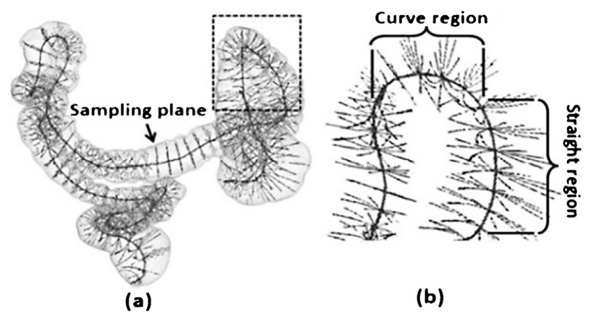
图 5 · 采样工具（论文 Fig. 5，沿用 Wang 的电场线采样，非创新点）。 （a）以中心线为正电荷生成电场线作采样射线，每个中心线点构成一个采样面；虚线框是大曲率区；（b）放大可见弯道及相邻直段处采样射线的非线性。把它放在这里是为了说明：DCA 矫正的，正是这种采样射线在弯道处的非线性。问：OSE 和 DCA-1 都用了测地距离场，它们到底解的是不是同一个问题？
答：不是。它们共用工具 （测地场把"沿管走了多远"编码进体素），但解的几何问题 不同：OSE 用单端 种子场的"球内极差"找"管在哪碰到自己"（拓扑自相交）；DCA-1 用双端 种子场（CGDM）等距面的"传播速度"找"管在哪拐弯"（曲率）。同一把测地场，一个读极差、一个读梯度速度，分别回答拓扑和曲率两个问题——这是全文方法学上最值得学的一点。
Takeaway： 测地距离场是这套方法的"通用底座"。把全局几何信息装进标量场，再用不同的局部读数（极差 / 速度）去解不同问题，比为每个问题单独造算法更省力、也更稳。
6. "训练"与算力账本：一条无参数的确定性管线
这不是一个会"训练"的方法——全程是确定性几何算法，没有可学习参数，因此没有优化器、学习率、epoch 这些东西。所谓"算力账本"，就是几何计算本身的开销与那几个手调阈值。
表 C。 计算成本与（无）训练设置。项目 论文披露 解释 缺失信息
可学习参数 无（确定性管线） OSE/DCA 都是几何算法，不需训练数据拟合 — 关键超参 $T_r{=}6.0$、$T_d{=}5\%$、$T_v{=}5.0$、$T_n{=}20$、$R{=}10$、$D{=}1$、$E{=}20$ 球半径 / 粘连阈 / 弯道速度阈 / 最大分段数 / CGDM 归一间隔 / 矫正点间距 / 匹配距离阈 各阈值的敏感性分析未给出 硬件 Intel 2.7 GHz CPU，8.00 GB RAM（PC） 纯 CPU，无 GPU 核数、是否并行未说明 用时 畸变矫正（OSE+DCA）约 5 min/例 仅矫正阶段，不含前置分割 前三步用时、总端到端用时未说明 实现 Matlab 2013a + VTK 四种方法统一实现以求公平 代码未开源
算力说明
论文只给出"矫正阶段约 5 min（Intel 2.7 GHz / 8 GB）"。这是 2014 年单机 CPU 的数字，没有 GPU-hours 一说；论文未说明如何折算到今天的硬件，本文不做此类换算。需要强调：5 min 仅指 OSE+DCA，不含 前置的肠腔分割、内表面与中心线提取，端到端时间论文未说明。
7. 主实验：双指标——畸变更小，且医生读得更对
实验做了两层对照。第一层定量 ：直接量畸变。在 3D（3D Slicer）和 2D 展平图上分别量息肉的最长径与最短径，定义尺寸畸变比（最长径的变化比）和形状畸变比（最长径/最短径的变化比）——越接近 1 越无畸变。第二层定性 ：三位医生独立阅片数检出。两层指标互相独立，这正是判断"换基准"是否真起作用的关键设计（参见 kexue 推导姿态第 3 条：主指标 + 辅助指标交叉验证）。
表 1（论文）。 尺寸与形状畸变比（2D 测量 vs 3D 测量，均值 ± 标准差）；越接近 1 越好。指标 本文（外表面） RCT（内表面） CMT（内表面） AST（内表面）
尺寸畸变比 1.18 ± 0.41 1.29 ± 0.64 1.19 ± 0.55 1.24 ± 0.47 形状畸变比 1.36 ± 0.37 1.59 ± 0.71 1.37 ± 0.43 1.45 ± 0.46
表 2（论文）。 四方法灵敏度（检出数/标注数），按医生与息肉尺寸。医生（息肉尺寸） 本文（外表面） RCT CMT AST
O1 · 6–9 mm 78.9% (45/57) 71.4% (39/57) 75.3% (40/57) 76.6% (41/57) O1 · ≥10 mm 90.0% (18/20) 80.0% (16/20) 90.0% (18/20) 90.0% (18/20) O2 · 6–9 mm 77.2% (44/57) 61.4% (35/57) 68.4% (39/57) 66.7% (38/57) O2 · ≥10 mm 90.0% (18/20) 80.0% (16/20) 90.0% (18/20) 90.0% (18/20) O3 · 6–9 mm 73.7% (42/57) 60.6% (34/57) 61.4% (35/57) 64.9% (37/57) O3 · ≥10 mm 85.0% (17/20) 75.0% (15/20) 80.0% (16/20) 80.0% (16/20) 平均 79.6% 67.1% 71.8% 72.7% P 值（ANOVA，对本文） — 0.0022 0.0508 0.0808
表 3（论文）。 四方法每例假阳性（假阳性数/扫描例数）。医生（≥6 mm） 本文（外表面） RCT CMT AST
O1 0.13 (8/60) 0.25 (16/60) 0.15 (9/60) 0.21 (13/60) O2 0.18 (11/60) 0.37 (22/60) 0.23 (14/60) 0.30 (18/60) 平均 0.16 0.32 0.21 0.26 P 值（ANOVA，对本文） — 0.0005 0.2241 0.0855
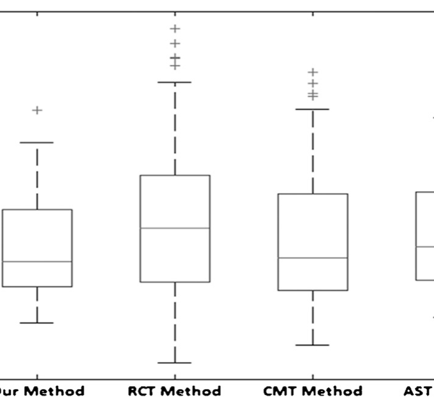
图 9 · 尺寸畸变比分布（论文 Fig. 9）。 本文方法的分布更集中在 1 附近，对应表 1 更小的均值与标准差。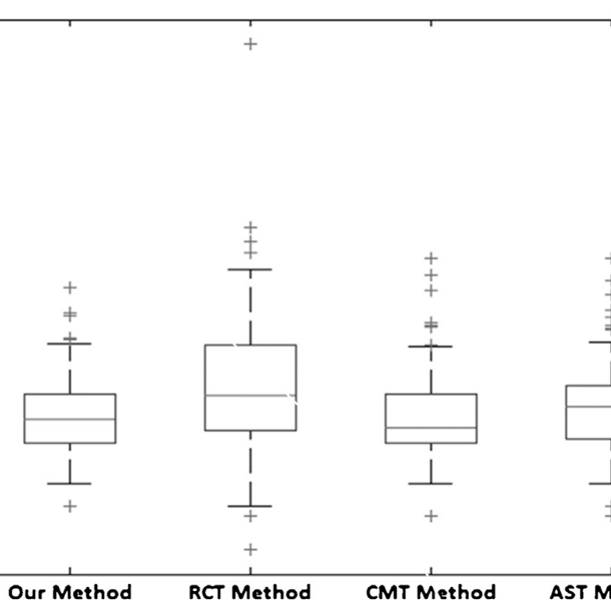
图 10 · 形状畸变比分布（论文 Fig. 10）。 形状比同样更贴近 1，说明息肉的长短径之比在展平后改变更小——这对"按形态分辨真假息肉"尤其重要。
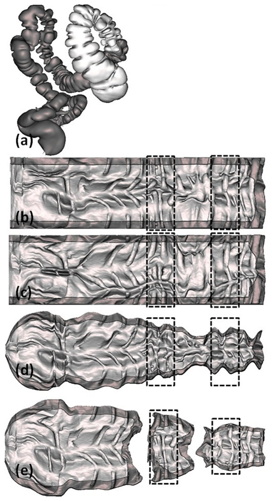
图 11 · 四技术正面对比（论文 Fig. 11）。 （a）真实 CT 病例中待展平的白色肠段；（b）ray casting、（c）conformal mapping、（d）skeleton straightening、（e）本文外表面法。黑框标注息肉位置（左框=若干假息肉，右框=一颗真息肉）。直观上本文结果对褶皱的还原更平顺，假息肉更少被"造"出来。问：主表足以证明"换成外表面"真的更好吗，还是只是某位医生、某类息肉的偶然？
引导：看三处一致性——畸变比、检出率、假阳性是否同向；是否跨三位医生、跨两类尺寸都不输；统计上是否显著。
答：证据链相当一致。① 直接量 （畸变比）：尺寸 1.18、形状 1.36 都是四法最小。② 下游量 （人读）：平均检出率 79.6% 最高、假阳性 0.16 最低，且跨三位医生、跨两个尺寸段 几乎处处不输（仅个别格与 CMT/AST 打平在 90%）。两个相互独立的指标同时变好，很难用偶然解释。③ 统计 ：对最弱的 RCT，检出率 P=0.0022、假阳性 P=0.0005，显著；对更强的 CMT、AST，P 值略高于 0.05（检出率 0.0508 / 0.0808，假阳性 0.2241 / 0.0855），趋势一致但未达传统显著线 ——作者也老实写了"P 值只比 0.05 高一点点"。
Takeaway： "外表面 > 内表面"在畸变与检出两条独立指标上同向成立、对最强基线 CMT/AST 优势真实但未必统计显著。结论可信，但别把它讲成"碾压"。
8. 消融视角：三个基线就是"去掉外表面"的对照
这篇论文没有 单独的消融表（这是它的写作年代与定位决定的）。但它的对照结构天然提供了对核心设计的"消融"：RCT/CMT/AST 与本文方法的差别只在"用内表面还是外表面做基准"这一处 （采样工具本文也沿用 Wang 的电场线采样）。因此，把本文方法和三个基线放在一起，等价于做了"去掉外表面基准 "这个变量的对照——这是读者可推断的解读，而非论文明写的消融。
顺着这个视角读表 1/2/3：当且仅当把基准从外表面退回内表面，畸变比和检出率同时变差、假阳性同时升高。这说明增益确实由"换基准"驱动，而不是某个采样小技巧。需要诚实标注的边界是：DCA-1 的"分弯/直段"、DCA-2 的"等弧长重采样"这两个子模块各自贡献多少，论文没有 单独拆开做控制变量，所以无法把增益精确分配到"换基准 / 分段 / 等弧长"三者。
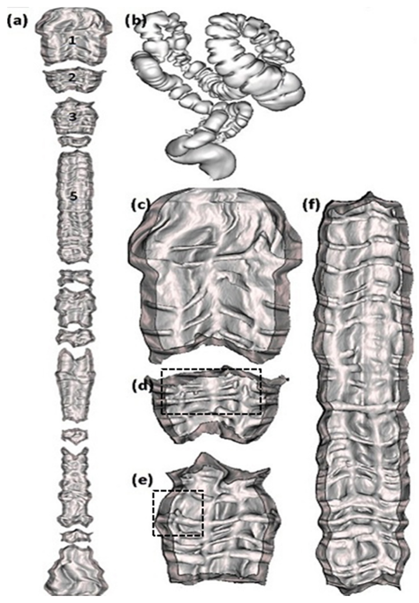
图 12 · 端到端产物（论文 Fig. 12）。 （a）本文方法产出的完整展平内表面图，深色为段界处的重叠区；（b）对应的 3D 结肠；（c）–（f）是（a）中第 1、2、3、5 段的放大，黑框标息肉——（d）里有四颗假息肉、（e）里有一颗真息肉。这张图要点出的是：分段带来的 split 用"重叠区"表示后，整图仍可读、息肉仍可辨。问：既然三基线能当消融，为什么还说"无法精确归因"？
答：因为"内→外表面"这一处变量虽被隔离，但本文方法相对基线还同时 引入了分段（DCA-1）与等弧长重采样（DCA-2）。三基线没有这两步，所以表里的差距是"换基准 + 分段 + 等弧长"的合力 。要把功劳拆开，需要"外表面但不分段""外表面分段但等角采样"这类中间组合，论文未做。结论方向无误（合力为正、且主要由换基准驱动），但精确份额未知。
Takeaway： 把对照当消融读是合理的，但要明确它消的是"整个外表面方案"这个大变量，而非三个子模块各自的独立贡献。
9. 局限与复现门槛
表 D。 局限、风险与复现门槛。边界 论文信息 读者应如何理解
分段产生 split 弯/直段独立处理会把展平图切断，用"重叠区"表示，深色显示 需要医生训练以适应；论文称训练后不影响检出，但这是主观结论 大量经验阈值 $T_r{=}6.0,\ T_d{=}5\%,\ T_v{=}5.0,\ T_n{=}20$ 等 跨数据集/采集协议的鲁棒性未验证；换设备可能需重调 依赖前置分割质量 OSE/DCA 建立在肠腔分割、内表面、外表面中心线之上 肠腔塌陷或分割断裂会让测地图失真 → 粘连/弯道检测失效 外表面光滑性假设 方法假定皱襞不传到浆膜层，外壁光滑 壁薄或病变处外壁可能继承毛糙，尺子失准（论文未量化此风险） 统计显著性有限 对 CMT/AST 的检出率 P=0.0508/0.0808 对最强基线优势真实但未达传统 0.05 线，样本量 60 例偏小 规模与评测 60 例、77 颗息肉、3 位医生、CPU 单机 结论限于该规模；未与深度学习 CAD 比较（2014 年）
问：这篇论文最容易被过度宣传成什么？
答：最容易被讲成"外表面展平全面碾压内表面方法、检出率提升十几个点"。更严谨的说法是：在 60 例上，外表面法相对最弱 的 ray casting 显著更好（检出 +12.5 点、假阳性减半，P<0.01）；相对较强 的 conformal mapping / skeleton straightening 在畸变与检出上一致更好，但未达统计显著 。它的真正贡献是方法论 ——"把矫正基准与目标解耦、改用光滑外表面"这个想法，以及用同一测地场分别解拓扑（粘连）与曲率（弯道）两个问题的工程范式。
Takeaway： 强项是思路清晰、双指标同向、对弱基线显著；边界是样本小、阈值多、对强基线未显著、子模块未拆解。
结语：几点学术判断
一句话总结： 当展平的难点在"用毛糙的内表面当尺子量自己"，最干净的解法不是把尺子打磨得更准，而是换一把本来就光滑的尺子（外表面），并把它和被测对象彻底分开 。
三个 takeaway：
对象解耦是真正的机制创新。 把"矫正基准"从"待矫正目标（内表面）"里独立出来，换成光滑外表面，让基准的平滑性不再被目标的褶皱污染——这是全文增益的主因。测地距离场是一座通用底座。 同一张把"沿管走了多远"编码进体素的测地场，OSE 读"球内极差"解拓扑自相交（粘连），DCA 读"等距面传播速度"解曲率（弯道）。一个场、两种读数、两个问题。把展平质量落到"人能否读对"。 畸变比是中间量，检出率/假阳性才是终点；双指标同向变好，是判断"换基准"是否奏效的关键证据设计，也提醒读者别只盯单一数字。 阅读路径建议：先看图 1 锚定"内/外表面 + 粘连"三概念 → 图 2 框架认清七步里哪两步是新的 → 第 5 节跟着式 1–7 重推 OSE 的极差检测与 DCA 的 velocity → 回到表 1/2/3 看双指标 → 用第 8/9 节校准"它成立到哪、未证明什么"。
资料来源与图像说明
Lin Lu, Jun Zhao. Virtual colon flattening method based on colonic outer surface . Computer Methods and Programs in Biomedicine 117(3), 2014: 473–481. DOI: 10.1016/j.cmpb.2014.10.004. 通讯作者 junzhao@sjtu.edu.cn（上海交通大学生物医学工程学院）。
本文所有公式（式 1–9）、表格（表 1–3）与数字均以期刊 PDF 为准，经机构网络下载核对；正文表 1/2/3 为论文原表逐项转写，未做"按表 X"式转述。
关键相关工作：电场线采样 Wang et al.（IEEE TMI 1998）；外表面中心线与本组前作 Zhang, Zhao, Lu, Li, Wang, Virtual eversion and rotation of colon based on outer surface centerline （Med. Phys. 37, 2010: 5518–5529，本专题另文）；肠壁提取 Van Uitert & Summers（IEEE TMI 2007）；测地距离图 Lu & Zhao（CMPB 2013）；对照基线 Hong et al.（SPM 2006，CMT）、Sudarsky et al.（MICCAI 2008，AST）。
方法学说明（kexue:su 红线）：本文机制推导按苏剑林 / kexue.fm 的"动机先行、假设显式、≥2 路交叉验证"姿态展开；检索语料库仅返回与连续黎曼几何测地线 相关的卡片（如 [archives/3977]《理解黎曼几何·测地线》、[archives/9368]《语义相似度的测地线距离》），与本文使用的离散格点 3–4–5 测地距离变换 属不同范畴（连续变分 vs 图上最短路），故仅作概念对照、不 将本文算法归因于苏剑林。
图像说明：图 1–12 均为本地 PNG，由期刊 PDF 以 300 DPI 按图注锚点裁切（图 1 因图注与正文合并为整块，单独按图形 bbox 裁出），路径位于 assets/figures/colonflat/；无装饰性配图。
Paper Digest · 虚拟结肠展平（外表面法）。公式已按 MathJax TeX 预检；论文未披露的信息统一标注为"论文未说明"。
{kind=link}
{kind=link}